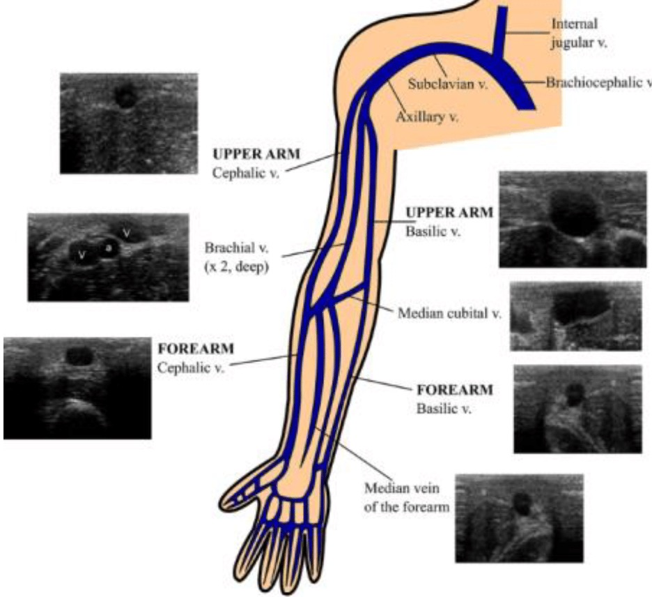
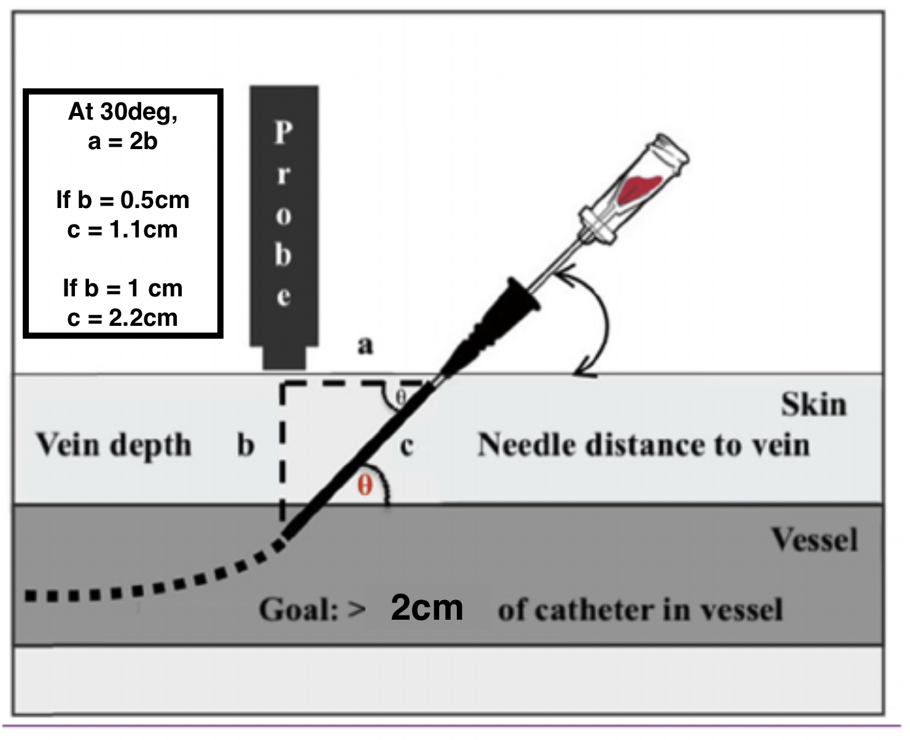

POCUS / Interactive tutorial
Ultrasound-guided
cannulation.
Arterial and intravenous access. See the tip, then advance.

In this tutorial
- 01–02 · Why ultrasound · Principles6 min
- Part I · Arterial lines12 min
- Part II · Difficult IV access9 min
- Quick check · Questions3 min
One discipline throughout: see the tip.
Replace the probabilistic argument with an objective one.
Landmark technique assumes the artery is straight and runs where you palpated. That assumption is tested after the first failed pass.
See the anatomy before you commit to it — calibre, depth.
Less trauma to the vessel wall when the puncture is deliberate, not exploratory.
Higher first-pass success — fewer bruised arteries, fewer repeat attempts.
Smoother and faster overall.
Routine use is how you build the hands and the eye for the difficult artery.
If ultrasound is your rescue tool, you will use it least often, under the worst conditions, with the least calibrated hand.
Set-up first. Practise deliberately.
Mastery comes with repetition — but only if the fundamentals are right every time.
These technical drills sit within routine consent, asepsis, monitoring and local vascular-access practice.
- 01Sit down and stabilise your forearmBetter fine motor control and visual alignment.
- 02Use an arm boardEssential for positioning. Account for hand dominance and artery side.
- 03Align needle, probe, and screen on one axisPrevents parallax error.
- 04High-frequency linear probe (>15 MHz)Best for superficial, high-resolution imaging. GE Venue Go (NTFGH) or Sonosite PX with L19–5 MHz.
- 05Keep target depth under 1 cm where possibleEnsures adequate catheter length and stability within the lumen.
- 06Use M-mode to find midlineConfirms the needle entry point on the probe.
- 07If you lose the tip — stop, retract, re-scanNever fish blindly. The tip you cannot see is the tip causing harm.
Arterial lines.
Choosing the artery, the cannula, the technique. And what to do when it doesn't go to plan.
Survey the artery · Match the cannula · Track the tip · Confirm the waveform
▶ Watch: Ki-Jinn Chin — Ultrasound-Guided Arterial Cannulation (YouTube)
Choose the artery before you reach for the cannula.
Recommended minimum size — diameter ≥ 2.0 mm for a 20G cannula (1.0 mm OD).
| Artery | Notes |
|---|---|
| Radial | First choice. Lateral to the flexor carpi radialis tendon. |
| Superficial radial variant | ~1% of patients. If the radial looks smaller than usual, scan proximally to look for a bifurcation. |
| Ulnar | Backup option. Confirm collateral flow before use. |
| Brachial | Backup option. Not for long-term use. |
| Femoral | Use a Seldinger technique if depth is greater than 1 cm. |
| Dorsalis pedis | Landmark technique or hockey-stick probe. The standard linear probe is not suitable. |
Longer cannula in the vessel — fewer problems later.
Optiva — 32 mm
Too short for deeper or mobile arteries. Skip it.
Angiocath (48 mm) · Flowswitch (45 mm)
Longer cannula means more cannula sitting within the vessel. More stable, less prone to displacement.
Seldinger technique
For arteries deeper than 1 cm. May be useful for calcified arteries as well. Vygon (8 cm) for obese or oedematous patients.
See the tip. Always.
Approach selection depends on operator confidence — but the discipline of tip visualisation does not change.
The blinking technique.
Dynamic tracking. Best for tortuous or mobile arteries. Walk the probe forward in small increments, keeping the tip visible at every step.
Full needle path visualised.
For experienced users. The needle, shaft and tip are visible throughout the approach. Less margin for probe-needle misalignment.
When the line won't transduce.
A short differential, in the order you should think about it.
| Problem | Likely cause |
|---|---|
| Cessation of backflow | Clot at the needle tip.Malpositioned needle tip. |
| No flow after threading | Kinked cannula.Clot in the cannula.Malpositioned cannula. |
| Guidewire won't thread | Needle tip against the posterior wall.Tortuous artery.Malpositioned tip. |
When the artery is the problem.
Each one wants a different adjustment. None of them want a second pass with the same plan.
| Situation | Approach |
|---|---|
| Tortuous or mobile artery | Use the short-axis blinking technique. · Or choose another artery. |
| Calcified artery | Insert at an acute angle to pierce, then flatten. · Or choose a non-calcified segment. |
| Elderly, lax skin | Stabilise the skin before puncture. |
| Obese or oedematous | Seldinger technique if depth is greater than 1 cm. · Vygon (8 cm) gives reach. |
Intravenous lines.
Engorging the vein, choosing it well, and matching the cannula to the geometry of what you have found.
Fill the vein · Map its course · Control probe pressure · Leave enough catheter in the lumen
Engorge the vein. Then choose the best one.
Ultrasound is for deep veins. Superficial veins will compress under the probe — or refuse to image cleanly.
Tourniquet — double if needed, to engorge deep veins.
Venous stasis mode (50 mmHg) on BP cuff
Warmth + gravity — improves filling. Use the time before you scan.
Skip US for superficial veins — either probe weight will compress them, or skin contact will be poor.
Use compression, pulsatility, anatomy and Doppler together — appearance alone is not definitive.
Know where to look.
Tap a vein to see its typical short-axis appearance.
Original slide figure

Move the probe with intent. Keep the vein centred.
Three small adjustments cover most of what the literature won't teach you.
- ↻Rotate · For curved or oblique veins.Don't fight the anatomy. Match the probe orientation to the segment you intend to puncture.
- ⟋Tilt · When the vein dives deeper.Adjust the probe angle to keep the target in the centre of the screen as it tracks deeper into tissue.
- ◐Colour · Confirm with the BART rule.Blue Away, Red Towards. A non-pulsatile signal is your venous confirmation before you commit.
Match the cannula to the vein you have actually found.
Two rules — outer diameter against vein, length against depth. Both have to hold.
Cannula OD ≤ 50% of vein diameter.
To minimise vessel wall trauma, phlebitis, and occlusion.
2 mm vein → 20G (1.0 mm) · 3 mm vein → 18G (1.3 mm) · > 4 mm vein → 14G (2.1 mm)
Exact arithmetic: 14G at 2.1 mm needs a vein ≥ 4.2 mm. 50% of the diameter is only 25% of the cross-sectional area.
At least 2 cm of cannula in the lumen — assuming a 30° insertion angle.
| Cannula | Maximum vein depth | At 6 mm |
|---|---|---|
| 22G (25 mm) | Usually too short for ultrasound-guided access. Experienced hands only. | |
| 20G (32 mm) | ≤ 0.5 cm | |
| 18–16G (45–50 mm) · 20G angiocath (48 mm) | ≤ 1 cm |
Goal: > 2 cm of catheter in the vessel.
At 30°, the needle travels c = 2b to reach a vein at depth b (sin 30° = ½); the skin entry sits a ≈ 1.7b from the probe. Whatever is left of the cannula is what sits in the lumen.
Original slide figure · numerical note

The figure's “At 30deg, a = 2b” is an approximation: a = 2b corresponds to 26.6°, which gives c = √5·b — hence its 1.1 cm and 2.2 cm. At exactly 30°, c = 2b and a = √3·b ≈ 1.7b. The calculator uses exact trigonometry. Slide 14 says “at least 2 cm”; the figure says “> 2 cm” — treat a value right on the boundary with caution.
Eight questions before we finish.
Tap an answer.
With practice — you will set lines fast, safely, and reliably in the most challenging patients.
Thank you.
Any questions?
“If you love what you do, you will teach yourself. If you do not love what you do, others will teach you.” — Yukitaka Yamaguchi
Further reading
ACEP Sonoguide: Vascular Access — needle tracking, compression, catheter path.
NYSORA: Essential Knobology — Doppler direction and settings.
Simulations are purpose-built teaching models, not diagnostic images. Real tissue deformation, artefacts, wire mechanics and patient variation are more complex. The 2 cm threshold is a teaching target, not a guarantee of catheter survival.